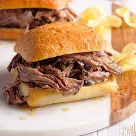

Slow Cooker Beef Sandwich

How to make delicious beef sandwich
This slow cooker beef is perfect for sandwiches, you just need a slow cooker.
Ingredients
- 3 cups water
- 1 package dry Italian-style salad dressing mix
- 1 teaspoon dried oregano
- 1 teaspoon dried basil
- 1 teaspoon dried parsley
- 1 teaspoon onion salt
- 1 teaspoon garlic powder
- 1 bay leaf
- 1 teaspoon salt
- 1 teaspoon ground black pepper
- 1 (2kg)rump roast
Steps
- Combine water, salad dressing mix, oregano, basil, parsley, onion salt, garlic powder, bay leaf, salt, and black pepper in a saucepan.
Stir well, and bring to a boil.
- Place rump roast in a slow cooker; pour hot herb mixture over the meat.
- Cover and cook on Low for 10 to 12 hours, or on High for 4 to 5 hours.
Remove bay leaf; shred beef with a fork and serve with some of the hot gravy.